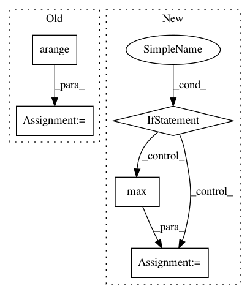

c890a06b4ef71d5827ff9a399e203a37af0191a5,skimage/exposure/exposure.py,,_bincount_histogram,#Any#Any#,38
Before Change
image_max = np.max(image).astype(np.int64)
image, offset = _offset_array(image, image_min, image_max)
hist = np.bincount(image)
bin_centers = np.arange(len(hist)) + offset
// clip histogram to start with a non-zero bin
idx = np.nonzero(hist)[0][0]
hist, bin_centers = hist[idx:], bin_centers[idx:]
elif source_range == "dtype":
After Change
def _bincount_histogram(image, source_range):
Efficient histogram calculation for a flat image of integers.
if source_range not in ["image", "dtype"]:
raise ValueError("Incorrect value for `source_range` argument: {}".format(source_range))
if source_range == "image":
image_min = np.min(image).astype(np.int64)
image_max = np.max(image).astype(np.int64)
elif source_range == "dtype":
image_min, image_max = dtype_limits(image, clip_negative=False)
image, offset = _offset_array(image, image_min, image_max)
hist = np.bincount(image.ravel(), minlength=image_max - image_min + 1)
bin_centers = np.arange(image_min, image_max + 1)
if source_range == "image":
idx = max(image_min, 0)
hist = hist[idx:]
return hist, bin_centers
In pattern: SUPERPATTERN
Frequency: 3
Non-data size: 5
Instances
Project Name: scikit-image/scikit-image
Commit Name: c890a06b4ef71d5827ff9a399e203a37af0191a5
Time: 2018-12-06
Author: devel@sciunto.org
File Name: skimage/exposure/exposure.py
Class Name:
Method Name: _bincount_histogram
Project Name: asappresearch/sru
Commit Name: faf3aa876462323f2fa721ebd633752d6489808f
Time: 2020-09-18
Author: taolei@csail.mit.edu
File Name: sru/modules.py
Class Name: SRU
Method Name: forward
Project Name: nipy/dipy
Commit Name: 121e8301283c9aae98463cd22f965bd670b4e36d
Time: 2013-11-14
Author: mrbago@gmail.com
File Name: dipy/reconst/csdeconv.py
Class Name:
Method Name: forward_sdt_deconv_mat